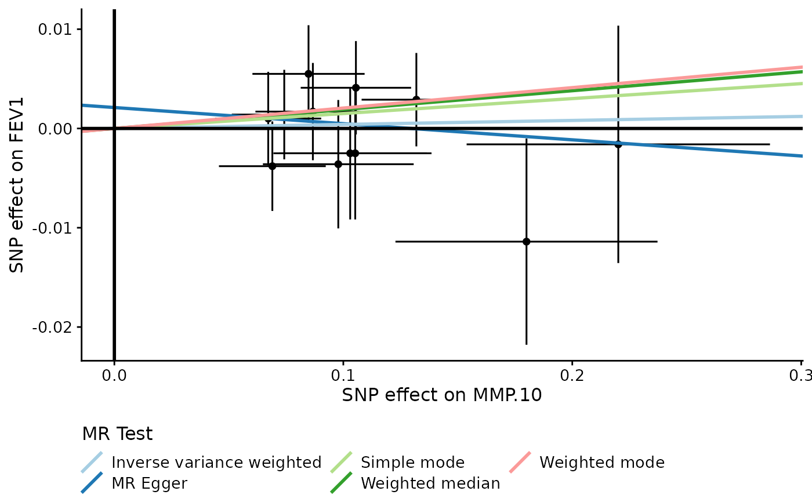
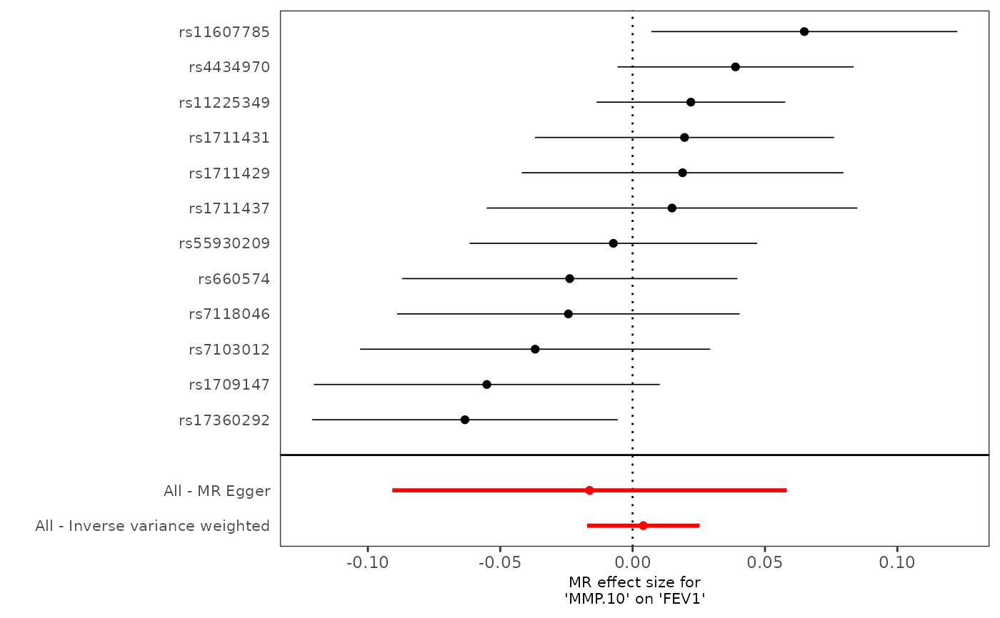
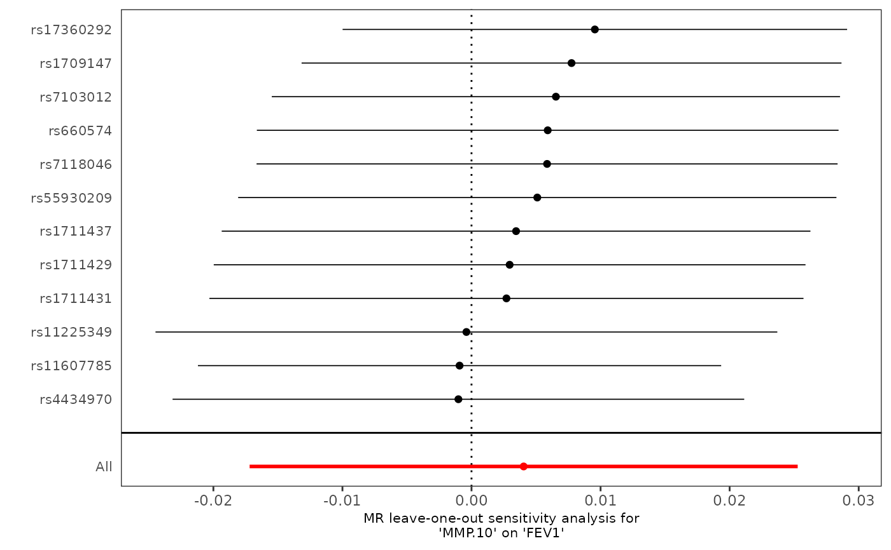

Given harmonised data, this function conducts a two-sample MR analysis.
Details
As TwoSampleMR faces seemingly perplexing options, this function intends to simplify various steps in a two-sample MR as in Dimou and Tsilidis (2018) . It is particularly useful when a large numbher of MRs are necessary, e.g., multiple proteins and their cis/trans regions need to be examined, in which case prefix could direct the output to various directories.
Check your authentication token if the example below fails to run.
References
Dimou NL, Tsilidis KK (2018). “A Primer in Mendelian Randomization Methodology with a Focus on Utilizing Published Summary Association Data.” In Evangelou E (ed.), Genetic Epidemiology: Methods and Protocols, chapter 13, 211–230. Springer New York, New York, NY. ISBN 978-1-4939-7868-7. doi:10.1007/978-1-4939-7868-7_13 .
Examples
suppressMessages(require(dplyr))
prot <- "MMP.10"
type <- "cis"
f <- paste0(prot,"-",type,".mrx")
d <- read.table(file.path(find.package("pQTLtools",lib.loc=.libPaths()),"tests",f),
header=TRUE)
exposure <- TwoSampleMR::format_data(within(d,{P=10^logP}), phenotype_col="prot", snp_col="rsid",
chr_col="Chromosome", pos_col="Posistion",
effect_allele_col="Allele1", other_allele_col="Allele2",
eaf_col="Freq1", beta_col="Effect", se_col="StdErr",
pval_col="P", log_pval=FALSE,
samplesize_col="N")
clump <- exposure[sample(1:nrow(exposure),nrow(exposure)/80),] # TwoSampleMR::clump_data(exposure)
# outcome <- TwoSampleMR::extract_outcome_data(snps=exposure$SNP,outcomes="ebi-a-GCST007432")
outcome <- pQTLtools::import_OpenGWAS("ebi-a-GCST007432","11:102090035-103364929","gwasvcf") %>%
as.data.frame() %>%
dplyr::mutate(outcome="FEV1",LP=10^-LP) %>%
dplyr::select(ID,outcome,REF,ALT,AF,ES,SE,LP,SS,id) %>%
setNames(c("SNP","outcome",paste0(c("other_allele","effect_allele","eaf","beta","se",
"pval","samplesize","id"),".outcome")))
unlink("ebi-a-GCST007432.vcf.gz.tbi")
harmonise <- TwoSampleMR::harmonise_data(clump,outcome)
#> Harmonising MMP.10 (PTlu05) and FEV1 (ebi-a-GCST007432)
prefix <- paste(prot,type,sep="-")
pQTLtools::run_TwoSampleMR(harmonise, mr_plot="pQTLtools", prefix=prefix)
#> Analysing 'PTlu05' on 'ebi-a-GCST007432'
#> Warning: Using `size` aesthetic for lines was deprecated in ggplot2 3.4.0.
#> ℹ Please use `linewidth` instead.
#> ℹ The deprecated feature was likely used in the pQTLtools package.
#> Please report the issue at <https://github.com/jinghuazhao/pQTLtools/issues>.
#> Warning: The `size` argument of `element_line()` is deprecated as of ggplot2 3.4.0.
#> ℹ Please use the `linewidth` argument instead.
#> ℹ The deprecated feature was likely used in the pQTLtools package.
#> Please report the issue at <https://github.com/jinghuazhao/pQTLtools/issues>.
#> `height` was translated to `width`.

#> `height` was translated to `width`.
#> Warning: Removed 1 row containing missing values or values outside the scale range
#> (`geom_point()`).

#> `height` was translated to `width`.
#> Warning: Removed 1 row containing missing values or values outside the scale range
#> (`geom_point()`).

caption <- "Table. MMP.10 variants and FEV1"
knitr::kable(read.delim(paste0(prefix,"-result.txt"),header=TRUE),
caption=paste(caption, "(result)"))
#>
#>
#> Table: Table. MMP.10 variants and FEV1 (result)
#>
#> |id.exposure |id.outcome |outcome |exposure |method | nsnp| b| se| pval|
#> |:-----------|:----------------|:-------|:--------|:-------------------------|----:|--------:|------:|------:|
#> |PTlu05 |ebi-a-GCST007432 |FEV1 |MMP.10 |MR Egger | 12| -0.01626| 0.0380| 0.6778|
#> |PTlu05 |ebi-a-GCST007432 |FEV1 |MMP.10 |Weighted median | 12| 0.01901| 0.0113| 0.0919|
#> |PTlu05 |ebi-a-GCST007432 |FEV1 |MMP.10 |Inverse variance weighted | 12| 0.00404| 0.0108| 0.7092|
#> |PTlu05 |ebi-a-GCST007432 |FEV1 |MMP.10 |Simple mode | 12| 0.01505| 0.0291| 0.6157|
#> |PTlu05 |ebi-a-GCST007432 |FEV1 |MMP.10 |Weighted mode | 12| 0.02056| 0.0357| 0.5766|
knitr::kable(read.delim(paste0(prefix,"-heterogeneity.txt"),header=TRUE),
caption=paste(caption,"(heterogeneity)"))
#>
#>
#> Table: Table. MMP.10 variants and FEV1 (heterogeneity)
#>
#> |id.exposure |id.outcome |outcome |exposure |method | Q| Q_df| Q_pval|
#> |:-----------|:----------------|:-------|:--------|:-------------------------|----:|----:|------:|
#> |PTlu05 |ebi-a-GCST007432 |FEV1 |MMP.10 |MR Egger | 19.1| 10| 0.0393|
#> |PTlu05 |ebi-a-GCST007432 |FEV1 |MMP.10 |Inverse variance weighted | 19.7| 11| 0.0500|
knitr::kable(read.delim(paste0(prefix,"-pleiotropy.txt"),header=TRUE),
caption=paste(caption,"(pleiotropy)"))
#>
#>
#> Table: Table. MMP.10 variants and FEV1 (pleiotropy)
#>
#> |id.exposure |id.outcome |outcome |exposure | egger_intercept| se| pval|
#> |:-----------|:----------------|:-------|:--------|---------------:|-------:|-----:|
#> |PTlu05 |ebi-a-GCST007432 |FEV1 |MMP.10 | 0.00211| 0.00377| 0.589|
knitr::kable(read.delim(paste0(prefix,"-single.txt"),header=TRUE),
caption=paste(caption,"(single)"))
#>
#>
#> Table: Table. MMP.10 variants and FEV1 (single)
#>
#> |exposure |outcome |id.exposure |id.outcome | samplesize|SNP | b| se| p|
#> |:--------|:-------|:-----------|:----------------|----------:|:-------------------------------|--------:|------:|------:|
#> |MMP.10 |FEV1 |PTlu05 |ebi-a-GCST007432 | 321047|rs11225349 | 0.02199| 0.0182| 0.2269|
#> |MMP.10 |FEV1 |PTlu05 |ebi-a-GCST007432 | 321047|rs11607785 | 0.06486| 0.0295| 0.0278|
#> |MMP.10 |FEV1 |PTlu05 |ebi-a-GCST007432 | 321047|rs1709147 | -0.05507| 0.0333| 0.0985|
#> |MMP.10 |FEV1 |PTlu05 |ebi-a-GCST007432 | 321047|rs1711429 | 0.01887| 0.0310| 0.5427|
#> |MMP.10 |FEV1 |PTlu05 |ebi-a-GCST007432 | 321047|rs1711431 | 0.01961| 0.0288| 0.4965|
#> |MMP.10 |FEV1 |PTlu05 |ebi-a-GCST007432 | 321047|rs1711437 | 0.01488| 0.0357| 0.6769|
#> |MMP.10 |FEV1 |PTlu05 |ebi-a-GCST007432 | 321047|rs17360292 | -0.06333| 0.0294| 0.0315|
#> |MMP.10 |FEV1 |PTlu05 |ebi-a-GCST007432 | 321047|rs4434970 | 0.03886| 0.0227| 0.0876|
#> |MMP.10 |FEV1 |PTlu05 |ebi-a-GCST007432 | 321047|rs55930209 | -0.00727| 0.0277| 0.7931|
#> |MMP.10 |FEV1 |PTlu05 |ebi-a-GCST007432 | 321047|rs660574 | -0.02376| 0.0323| 0.4622|
#> |MMP.10 |FEV1 |PTlu05 |ebi-a-GCST007432 | 321047|rs7103012 | -0.03681| 0.0337| 0.2753|
#> |MMP.10 |FEV1 |PTlu05 |ebi-a-GCST007432 | 321047|rs7118046 | -0.02427| 0.0330| 0.4622|
#> |MMP.10 |FEV1 |PTlu05 |ebi-a-GCST007432 | 321047|All - Inverse variance weighted | 0.00404| 0.0108| 0.7092|
#> |MMP.10 |FEV1 |PTlu05 |ebi-a-GCST007432 | 321047|All - MR Egger | -0.01626| 0.0380| 0.6778|
knitr::kable(read.delim(paste0(prefix,"-loo.txt"),header=TRUE),
caption=paste(caption,"(loo)"))
#>
#>
#> Table: Table. MMP.10 variants and FEV1 (loo)
#>
#> |exposure |outcome |id.exposure |id.outcome | samplesize|SNP | b| se| p|
#> |:--------|:-------|:-----------|:----------------|----------:|:----------|---------:|-------:|-----:|
#> |MMP.10 |FEV1 |PTlu05 |ebi-a-GCST007432 | 321047|rs11225349 | -0.000395| 0.01229| 0.974|
#> |MMP.10 |FEV1 |PTlu05 |ebi-a-GCST007432 | 321047|rs11607785 | -0.000926| 0.01034| 0.929|
#> |MMP.10 |FEV1 |PTlu05 |ebi-a-GCST007432 | 321047|rs1709147 | 0.007751| 0.01067| 0.468|
#> |MMP.10 |FEV1 |PTlu05 |ebi-a-GCST007432 | 321047|rs1711429 | 0.002954| 0.01170| 0.801|
#> |MMP.10 |FEV1 |PTlu05 |ebi-a-GCST007432 | 321047|rs1711431 | 0.002707| 0.01174| 0.818|
#> |MMP.10 |FEV1 |PTlu05 |ebi-a-GCST007432 | 321047|rs1711437 | 0.003453| 0.01164| 0.767|
#> |MMP.10 |FEV1 |PTlu05 |ebi-a-GCST007432 | 321047|rs17360292 | 0.009557| 0.00997| 0.338|
#> |MMP.10 |FEV1 |PTlu05 |ebi-a-GCST007432 | 321047|rs4434970 | -0.001016| 0.01130| 0.928|
#> |MMP.10 |FEV1 |PTlu05 |ebi-a-GCST007432 | 321047|rs55930209 | 0.005097| 0.01183| 0.666|
#> |MMP.10 |FEV1 |PTlu05 |ebi-a-GCST007432 | 321047|rs660574 | 0.005904| 0.01150| 0.608|
#> |MMP.10 |FEV1 |PTlu05 |ebi-a-GCST007432 | 321047|rs7103012 | 0.006539| 0.01123| 0.560|
#> |MMP.10 |FEV1 |PTlu05 |ebi-a-GCST007432 | 321047|rs7118046 | 0.005855| 0.01148| 0.610|
#> |MMP.10 |FEV1 |PTlu05 |ebi-a-GCST007432 | 321047|All | 0.004041| 0.01083| 0.709|
for (x in c("result","heterogeneity","pleiotropy","single","loo"))
unlink(paste0(prefix,"-",x,".txt"))